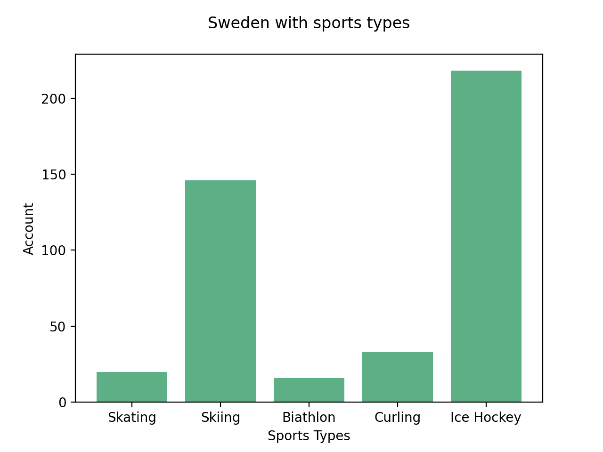

Winter Olympic Data Analysis
1898-2014

We have had a big event called "Olympics" in winter. We have a time of enthusiasm when we see various heroes in the world of fierce competition. Obviously there are results of win and lose in the competition, but we know how valuable their sweat and effort are, regardless of the color of the medal, they did their best and we respect all the players.
I analyzed the entire data of valuable medals in various fields. Data was provided the IOC Research and Reference Service and published by The Guardian's Datablog
Top 10 countries
Top 10 countries

Congraturation! This is the countries with the most medals
Divided the countires in continent
Divided the countires in continent


Top 10 countries were divided into America, Europe and Eurasia.
America included two countires; USA and CAN. Europe included totally six countries; NOR, FIN, SWE, GER, SUI and AUT. Eurasia included last two countries; URS and RUS.
By a small gap, the United States won more medals in America, Norway showed the largest number in Europe, and the Soviet Union had more medals in Eurasia.
Top 3 countries/
Top 3 countries devided by gender

Top 3 countries devided by gender
The proportion of men is much higher than women in all countries
Top 3 countries with edal types
Top 3 countries with medal types
United States has more medals in total, but Canada has more gold medals. United States has the highest number of silver and bronze medals.
South Korea
South Korea Analyze
South Korea
South Korea : Individual vs Team
Team events included relay sports and team pursuit, individual event involved with 150m to 10000m of skating. It records similar amount; 44 medals with team, 43 medals with individual.
South Korea
South Korea : Gender
Otherwise top3 countries, it shows a higher proportion of women.

This is the link to our famous figure skating athelete as my favorite athelete "Kim Yuna" in 2010 Vancouver Olympic and 2014 Sochi Olympic. She is the queen of figure skating and I really honor to be with her in the same period of time. She is the best ever symbolize the efforts.
South Korea
South Korea : Period

It recorded the lowest number in 1992 and 2002 with 7 medals, but it had a highest amount in 2006 with 19 medals.
Nearest countires
Compare with nearby countries
Nearest countires
Kazakhstan and Uzebekistan
Kazakhstan maintains more number in total medal account rather than Uzevekistan.
Nearest countires2
Norway, Sweden and Finland
Norway had a biggest account of gold medal. Overall, 3 entire countires recorded the great grades in Olympics. It is on the high grade side among the 45 countires.
Nearest countires2
Devided the 3 countires above in sports types
There are 5 sports types, skating; skiing; biatholon; curling; ice hockey. Norway has excellent results both skating and skiing, while ice hockey has a high amount of Sweden and Finland also has a big proportion in ice hockey. Curling has a highest number in Sweden. In conclusion, Norway has the upper hand among the three countries
Nearest countires3
Germany, Denmark, Belgium and Poland
Germany clearly seems a largest proportion of medal accounts among the 4 countires. They are strong in winter sports!
Nearest countires4
Italy, Spain, and France
Italy and France are both strong in winter sports.
Nearest countires5
Japan, Korea, and China
By the small amount of gap, Korea got more medals than China.